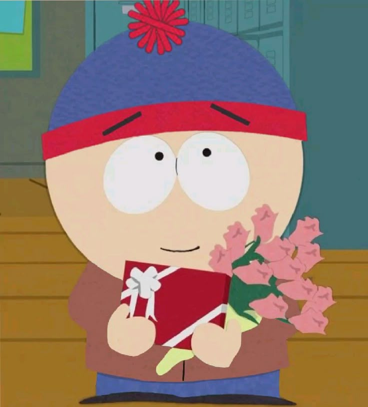
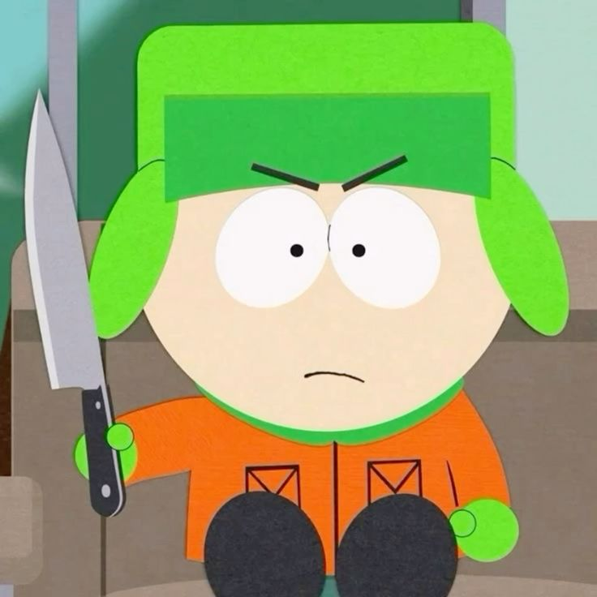
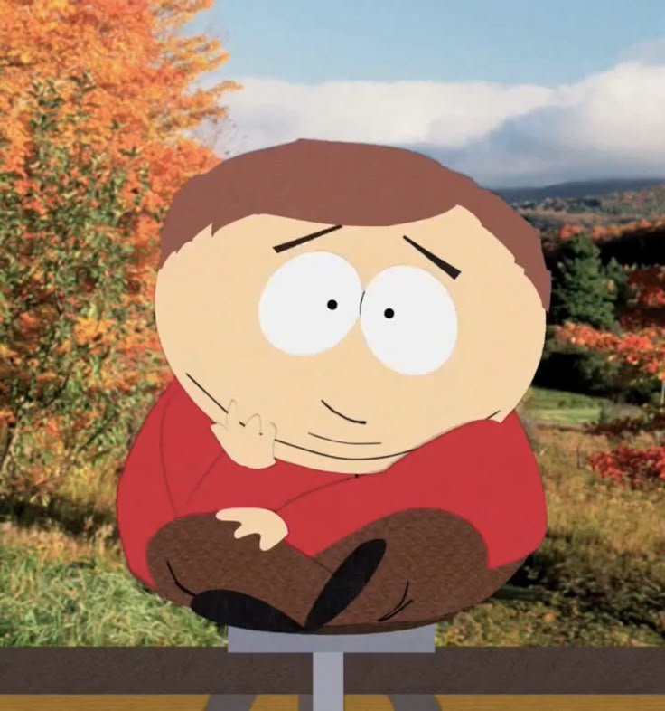
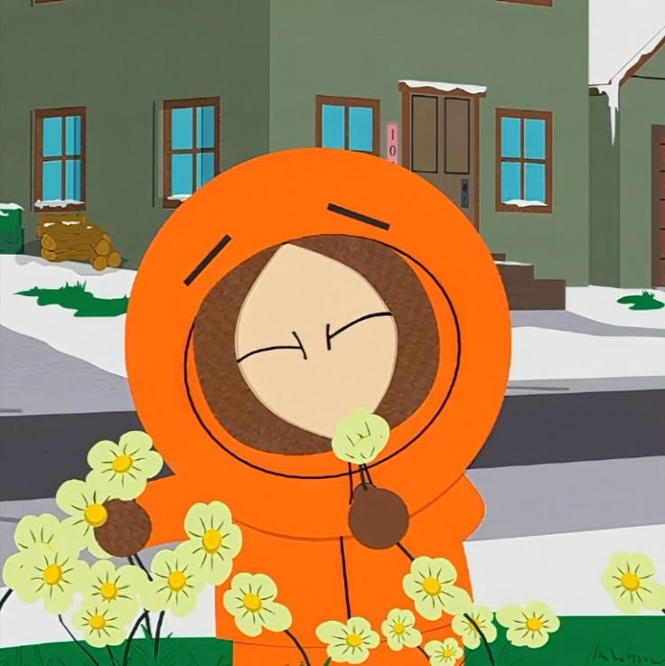
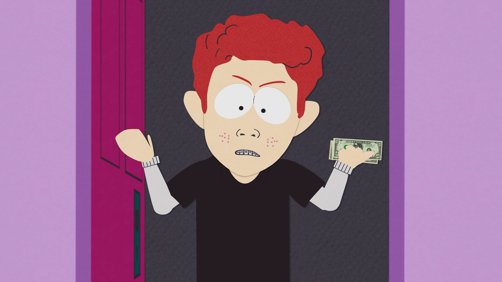
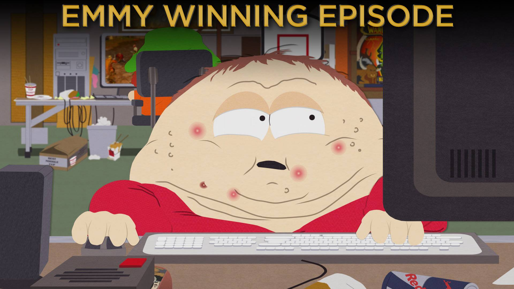

South Park: el pueblo más caótico de Colorado
South Park es una serie animada para adultos creada por
Trey Parker y Matt Stone en
EE.UU. y emitida por
CC desde 1997. La serie se centra en
cuatro chicos de un pueblo ficticio en las montañas de Colorado y se
caracteriza por su humor ácido, sus críticas sociales y su
animación con apariencia de recortes de cartulina. Su frase más
recordada, Oh my God, they killed Kenny!
, se convirtió
en un ícono de la cultura pop.
Personajes
Los cuatro protagonistas son alumnos de la escuela primaria de
South Park y cada uno representa un arquetipo distinto.

Stan Marsh
El "chico normal" del grupo. Suele ser la voz de la
razón cuando todo se descontrola. Lleva el clásico gorro azul con
pompón rojo.

Kyle Broflovski
El mejor amigo de Stan, judío y profundamente moralista.
Suele ser el blanco preferido de las burlas de Cartman. Su gorro verde
es marca registrada.

Eric Cartman
El antagonista recurrente del show. Egocéntrico,
racista y manipulador, pero también una de las principales fuentes de
comedia. Su gorro celeste con pompón amarillo lo hace inconfundible.

Kenny McCormick
El chico de la familia pobre, siempre cubierto por una capucha
naranja que apaga su voz. Famoso por
morir en casi todos los episodios de las primeras temporadas.
Episodios recomendados
Una selección de capítulos clave para entender por qué la serie marcó
una época.

Scott Tenorman debe morir —
T5 Ep. 4
Cartman es estafado por un chico mayor llamado Scott Tenorman y planea
una venganza tan retorcida que se convirtió en uno de los momentos
más oscuros y memorables de toda la serie.

Hagan el amor, no Warcraft —
T10 Ep. 8
Los chicos se obsesionan con
World of Warcraft para derrotar a un jugador
que arruina el juego para todos. Ganó un premio
Emmy
y es una carta de amor a la cultura gamer.

Casa Bonita —
T7 Ep. 11
Cartman hace lo imposible (y lo cruel) para ser
invitado al cumpleaños de Kyle en el restaurante mexicano
Casa Bonita. Un clásico de la maldad cartmaniana.

Imaginationland —
T11 Ep.
10-12
Una trilogía épica en la que los chicos descubren un
mundo habitado por todos los personajes ficticios jamás imaginados,
que es atacado por terroristas. Mientras tanto, Cartman intenta a
toda costa cobrarle a Kyle una apuesta perdida que se volvió
un meme eterno.

AWESOM-O —
T8 Ep. 5
Cartman se disfraza de un robot llamado
AWESOM-O para humillar a Butters, pero el plan
se le va de las manos cuando es secuestrado por el
Pentágono y enviado a Hollywood como prueba de tecnología
extraterrestre.